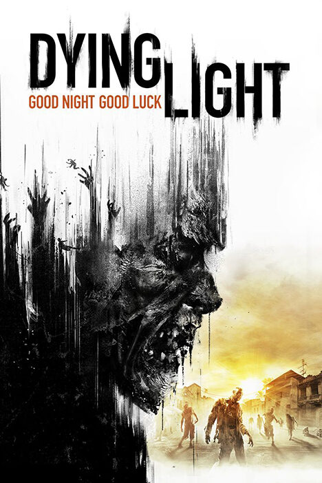

Это страница про игру Dying Light
Dying Light — компьютерная игра в жанре survival horror и action-adventure от первого лица с открытым миром, разработанная польской студией Techland и изданная Warner Bros. Interactive Entertainment в 2015 году для PlayStation 4, Xbox One, Microsoft Windows и Linux. После выхода дополнения The Following игра стала дополнительно доступна в составе Enhanced Edition. Действие игры происходит в вымышленном ближневосточном мегаполисе Харран (англ. Harran), охваченном зомби-апокалипсисом. Главный герой — агент под прикрытием, по имени Кайл Крейн, которому поручили проникнуть в город, чтобы найти и заполучить ценные данные о вирусе. По прибытии на место его избивают люди Раиса, сразу после чего Крейна заражают. Поэтому он вынужден присоединиться к общине выживших харранцев, обороняющихся от бандитов и толп зомби, чтобы выжить с их помощью и выполнить своё задание. Особенностями игры является открытый мир, активное использование паркура в тесной городской застройке и смена дня и ночи — в тёмное время суток на улицах города появляются более опасные противники.
